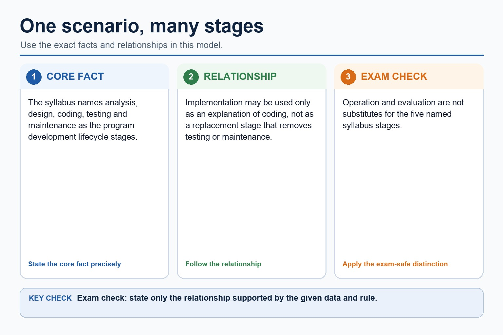

Quick route
Use the diagnostic, learning objectives, first worked example and foundation question. Stop once the learner can explain the central distinction accurately.
Cambridge AS9618 | Paper 2 | Section 12: Software development
Flexible-depth lesson
S12.01 | Select what to omit, teach briefly or explore in depth.
Part 1 | optional depth
Recall the main conclusion from Lesson 080: Writing complete program fragments.
Give one accurate definition or method step before continuing. If it is missing, revisit only that prerequisite.
Part 2 | deliberately over-complete
Teach all points, or select only the ones this group needs. The list is intentionally fuller than a fixed lesson slot.
Choose a lifecycle model / Choose a lifecycle model: For a small booking interface with available users and changing requirements, RAD can use a time-boxed prototype and immediate user feedback. For safety-critical stable requirements, waterfall's formal traceability may be more suitable than rapid prototyping. RAD suits a small interface whose users can review frequent prototypes. Waterfall may suit stable, safety-critical requirements where formal traceability matters, although late change remains a limitation.

Part 3 | select by learner need
Question 1. Compare waterfall, iterative and RAD for a system whose users can review frequent prototypes. Compare waterfall, iterative and RAD, including one limitation of each model.
Answer: waterfall uses planned sequential stages and formal documentation; iterative development reviews repeated versions; RAD uses rapid prototypes/time-boxing; RAD uses frequent user involvement and is linked to the scenario; waterfall and limitation; iterative and limitation; RAD features; RAD limitation/less suitable context
Marking guidance: Do not substitute Agile for RAD or describe all repeated development as the same model. Do not describe all lifecycle models as the same repeated process.
Common error: For the command word compare, perform that exact action; do not replace it with an unrelated fact.
Question 2. Identify three defining features of RAD.
Answer: Rapid prototyping, time-boxing and frequent user involvement/feedback.
Marking guidance: Award one mark for each distinct, technically accurate point or method step.
Common error: Do not repeat the same point in different words; each mark needs a separate idea or method step.
Question 3. Why might RAD be unsuitable for a safety-critical system?
Answer: Rapid cycles may not provide the exhaustive assurance and traceability required.
Marking guidance: Award one mark for each distinct, technically accurate point or method step.
Common error: Do not copy the worked example unchanged; transfer the method and check it against the new context.
| Reference | Marks | Command word | Question type |
|---|---|---|---|
| 9618/22/S/25 Q1(c) | 4 | complete | recall |
| 9618/22/S/25 Q1(i) | 3 | explain | explain |
| 9618/22/S/25 Q1(iii) | 2 | explain | explain |
| 9618/22/S/25 Q1(i) | 1 | explain | explain |
Index only: Cambridge question and mark-scheme wording is not reproduced on this public course page.
Part 4 | close when ready
Students often describe the lifecycle as a fixed checklist. Correction: development is iterative; findings can send a project back to earlier stages.